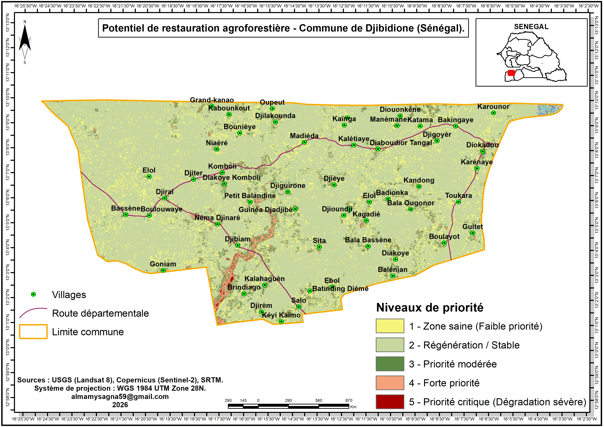
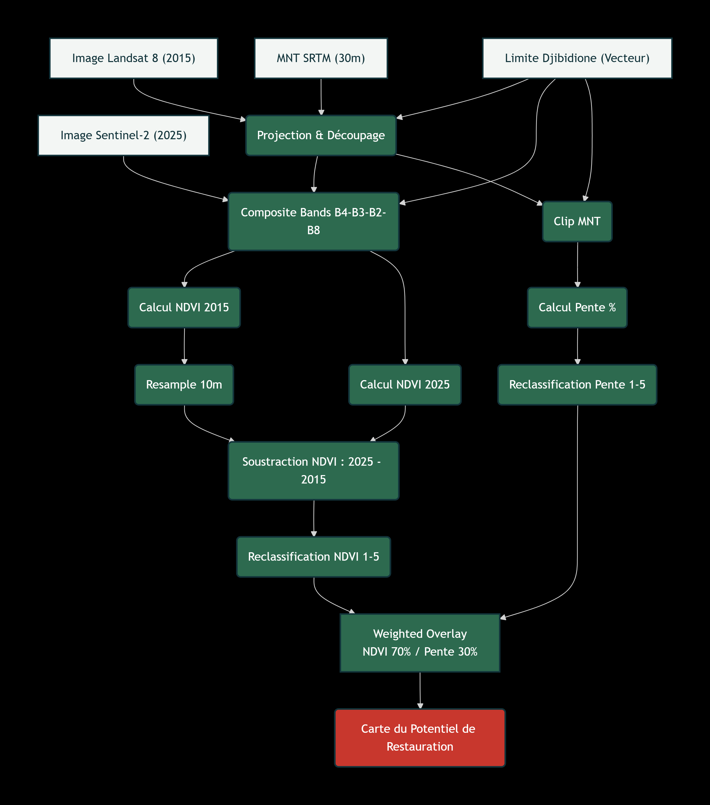

Potentiel de restauration agroferestière dans la commune de Djibidione
Télédétection et analyse multicritère sous ArcMap
Contexte et objectif
J'ai réalisé une méthodologie d'aide à la décision pour identifier les zones prioritaires à restaurer. L'objectif est de fournir un outil cartographique permettant d'optimiser les campagnes de terrain (terrassement, demi-lunes, ensemencement) avant la saison des pluies. L'étude s'est concentrée sur la commune de Djibidione, située dans le département de Bignona (Basse-Casamance). Ce choix est stratégique : cette zone frontalière avec la Gambie connaît un retour massif des populations après des années de conflit, entraînant une forte pression sur les ressources forestières (coupe de bois, feux de brousse) et une dégradation accélérée des terres agricoles, notamment par la salinisation des bas-fonds.Méthodologie et Données
Le projet repose sur une analyse de la dynamique spatio-temporelle sur 10 ans (2015 - 2025), en croisant des données de télédétection gratuites et des facteurs biophysiques.- Télédétection: Calcul de l'indice de végétation NDVI sur une image Landsat 8 (2015, 30m) et une image Sentinel-2 (2025, 10m) pour cartographier la perte de biomasse entre les deux dates (Dynamique du NDVI).
- Topographie: Utilisation du Modèle Numérique de Terrain (MNT SRTM à 30m) pour calculer la pente (en %). Cette donnée est cruciale pour la faisabilité technique des aménagements anti-érosifs.
- Analyse Multicritère: Après reclassification des indices (notes de 1 à 5), l'outil Weighted Overlay d'ArcMap a permis de fusionner les facteurs (70% de poids pour la dégradation de la végétation, 30% pour la pente) et de générer la carte finale du potentiel de restauration.
Résultats et Livrables
La carte produite segmente le territoire de Djibidione en 5 niveaux de priorité. Les zones en rouge (Priorité critique) combinent une forte perte de végétation et une pente idéale (2 à 5%) pour la rétention d'eau. Ces zones sont directement exploitables par les équipes de Hommes et Terre pour planifier leurs chantiers avec les comités villageois. Afin de rendre la carte opérationnelle sur le terrain, j'ai intégré le réseau routier et les villages, et basculé le système de coordonnées du cadre en Latitude/Longitude (GPS). Un décideur peut ainsi identifier visuellement une zone prioritaire à proximité d'un village et transmettre les coordonnées exactes aux équipes.

Outils et limites
ArcMap (Spatial Analyst, Raster Calculator, Weighted Overlay), USGS EarthExplorer, Copernicus Data Space Ecosystem.
La résolution spatiale des images historiques Landsat (30m) a nécessité un rééchantillonnage (Resample) pour être alignée sur la résolution de Sentinel-2 (10m), ce qui peut entraîner une légère perte de précision sur les bordures de parcelles pour l'année 2015. De plus, le modèle ne prend pas encore en compte la propriété foncière ni les zones protégées, qui devront être intégrées en amont des travaux pour respecter les usages locaux.